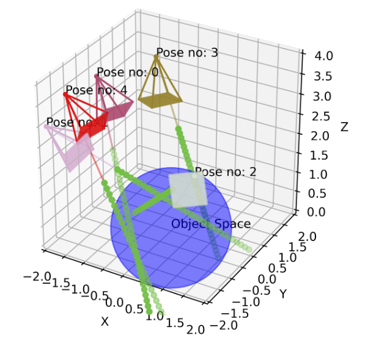
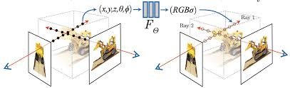

NeRF
-
what are NeRFs?
NeRFs are a type of network used to generate unseen views of an object using the seen views as the dataset. The model takes a 5D(3d coordinates,camera angles) input and then outputs a 4D(rgb color, densoty) vector.
-
Sampling Inputs
The 3 dimensinal coordinates that has to be passed into the neural network is sampled using a ray casting algorithm. The algorithm is as follows:
- Cast a ray from a pixel of the image to the object.
- Sample points along the ray.
- Pass the sampled points to the network.

Code:
def compute_rays(height,width,focal_length,cam2world): x ,y = tor_to_meshgrid( torch.arrange(width).to(cam2world), torch.arrange(height).to(cam2world) ) directions = torch.stack( [(x - width*0.5)/focal_length, (y - height*0.5)/focal_length, torch.ones_like(x)] ) ray_o = torch.broadcast_to( cam2world[:3,-1], directions.shape ) ray_dir = torch.sum( directions[...,None,:] * cam2world[:3,:3], dim=-1 ) return rays_o,ray_dirThis function returns all the points on the image and it’s direction vector. The points are then sampled using the following function:
def compute_query_points(ray_directions,ray_origins,near far,num_samples,random=True): depth_values = torch.linspace(near,far,num_samples).to(ray_origins) if random: shape = list(depth_values.shpae[:,-1]) + [num_samples] depth_values = depth_values + torch.rand(shape).to(ray_origins) * (far - near)/num_samples query_points = ray_origins[...,None,:] + ray_directions[...,None,:]*depth_values[...,None,:] return query_points, depth_values -
Archeitecture

The network is a fully connected network with 8 layers. The input to the network is a 5D vector and the output is a 4D vector. The network is trained using a loss function which is the sum of the MSE of the rgb color and the density. The network is trained using the Adam optimizer.